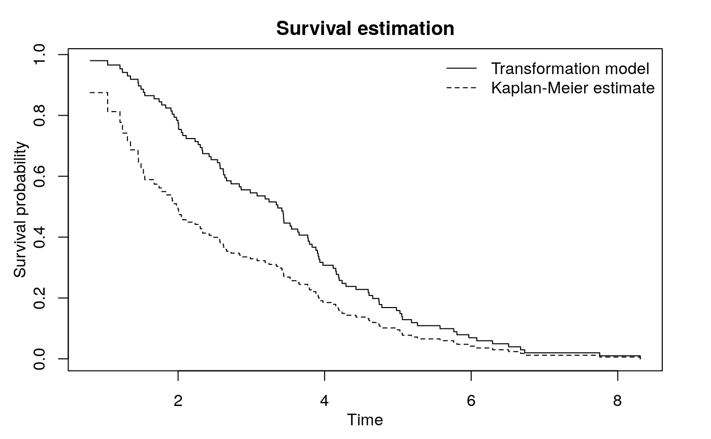

This vignette provides a short tutorial on the usage of the package’s main function, trSurvfit.
Example function in ?trSurvfit
> datgen <- function(n) {
+ a <- -0.3
+ X <- rweibull(n, 2, 4) ## failure times
+ U <- rweibull(n, 2, 1) ## latent truncation time
+ T <- (1 + a) * U - a * X ## apply transformation
+ C <- 10 ## censoring
+ dat <- data.frame(trun = T, obs = pmin(X, C), delta = 1 * (X <= C))
+ return(subset(dat, trun <= obs))
+ }Set a random seed and see data structure.
> set.seed(1)
> dat <- datgen(100)
> head(dat) trun obs delta
1 1.8374416 4.606270 1
2 1.9072099 3.976991 1
3 1.6963782 2.985634 1
4 0.4323355 1.241174 1
5 1.9913542 5.061325 1
6 1.2630309 1.309359 1The trun is the truncation time, obs is the observed survival time, and delta is the censoring indicator. Fitting this with trSurvfit:
> with(dat, trSurvfit(trun, obs, delta))
Fitting structural transformation model
Call: trSurvfit(trun = trun, obs = obs, delta = delta)
Conditional Kendall's tau = 0.5312 , p-value = 0
Restricted inverse probability weighted Kendall's tau = 0.5312 , p-value = 0
Transformation parameter by minimizing absolute value of Kendall's tau: -0.3011
Transformation parameter by maximizing p-value of the test: -0.3011 The function trSurvfit gives some important information. The conditional Kendall’s tau for the observed data (before transformation) is 0.5312 with a \(p\)-value < 0.001. The restricted IPW Kendall’s tau (Austin and Betensky, 2014) gives the same result. The transformation parameter, \(a\), turns out to be \(-0.3011\). The estimated survival curve (based on \(a\)) can be plotted with survfit:
> library(survival)
> foo <- with(dat, trSurvfit(trun, obs, delta))
> plot(survfit(Surv(ta, obs, delta) ~ 1, data = foo$qind))
Make a function to call the transformation parameter \(\alpha\).
> do <- function(n){
+ foo <- with(datgen(n), trSurvfit(trun, obs, delta))
+ c(foo$byTau$par[1], foo$byP$par[1])
+ }Try \(n = 100\) with 100 replicates:
> set.seed(1)
> result <- replicate(100, do(100))This returns a 2 by 100 matrix. The first row gives \(\hat\alpha\) by maximizing the conditional Kendall’s tau and the second row gives \(\hat\alpha\) by minimizing the \(p\)-value from the conditional Kendall’s tau test.
> summary(t(result)) V1 V2
Min. :-0.3504 Min. :-0.3504
1st Qu.:-0.3175 1st Qu.:-0.3174
Median :-0.2999 Median :-0.2999
Mean :-0.3010 Mean :-0.3010
3rd Qu.:-0.2863 3rd Qu.:-0.2862
Max. :-0.2495 Max. :-0.2495